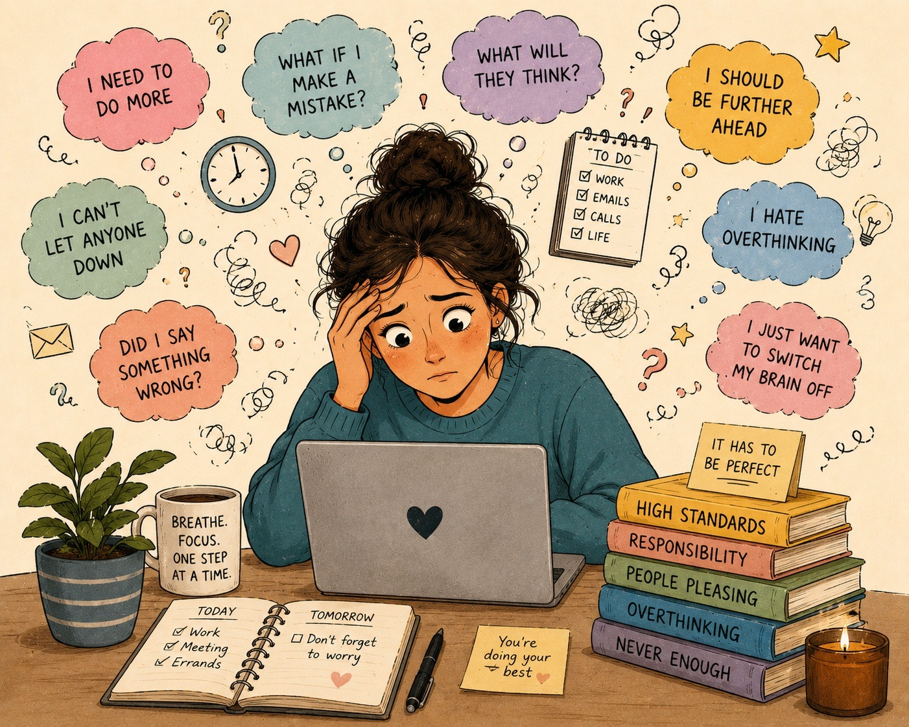

Guide: What Is High-Functioning Anxiety?

The one everyone relies on
The friend who never forgets a birthday. The colleague who hasn't missed a deadline in years. The parent who remembers the school trip, the dentist appointment, the packed lunches and somehow still manages to ask everyone else how they're doing. When you ask how they are, they smile, "I'm fine."
What you don't see is that they have already re-read the same email four times before pressing send. Their shoulders have been tense since breakfast. Their mentally planning tomorrow before today has even begun. And when they finally get into bed that night, exhausted, their mind decides it's the perfect time to replay every conversation they've had that day.
From the outside, they look calm, capable and successful.
From the inside, they rarely feels at peace.
If that sounds familiar, either in yourself or someone you love, you may have come across the phrase high-functioning anxiety.
For many people, it's the first description that has ever made them feel truly understood.
It Isn't an Official Diagnosis: But That Doesn't Make It Any Less Real
"High-functioning anxiety" isn't a recognised mental health diagnosis.
You won't find it in the DSM-5-TR or the ICD-11, the diagnostic manuals clinicians use around the world. Instead, many people who describe themselves this way would meet the criteria for conditions such as generalised anxiety disorder, social anxiety disorder or panic disorder. Others may have anxiety linked to earlier trauma, chronic stress or burnout. Some don't quite meet the threshold for a formal diagnosis at all.
That doesn't mean they aren't struggling and overwhelmed.
In fact, many are paying an enormous price every single day.
The phrase has also become popular because it describes something many diagnostic labels don't immediately capture: people who appear to be functioning exceptionally well while quietly carrying an exhausting amount of anxiety beneath the surface.
They go to work, meet deadlines, maybe care for their families, they are exceptionally good at showing up for everyone else.
They achieve, but all the while they're carrying a level of internal pressure that very few people ever see.
The term high-functioning can be slightly misleading because it almost sounds like a compliment. As though functioning well somehow means the anxiety isn't serious. In reality, many people aren't functioning without anxiety, they're functioning through anxiety and often at a tremendous emotional and physical cost. The experience is real. The label may be unofficial, but the anxiety underneath it is well understood and, importantly, highly treatable.
What Does High-Functioning Anxiety Actually Feel Like?
One of the reasons people often don't recognise their anxiety is because it rarely arrives as one dramatic symptom. Instead, it becomes a way of living, plus after years of operating this way, it stops feeling like anxiety, it simply feels like you, it’s become normalised.
How can you tell you are functioning in this way?
The most telling adaptation of this high functioning, is that your mind never really switches off.
Therefore your thoughts are rarely in the present for long, part of your attention is already scanning for what could go wrong next. You end up replaying conversations after they've finished. You might rehearse conversations that haven't happened yet, and perhaps never will. You worry whether your email sounded abrupt. You think of one more thing you should have said. You research every decision until you're almost too overwhelmed to make it.
From the outside, this often looks like being organised, conscientious and thorough. But from the inside, it feels like carrying a mind that never quite allows itself to rest.
Another unseen reality may be that you appear calm to others, but your body tells a different story.
Often those around high functioning individuals are clueless, they will describe you as relaxed, unflappable, reliable, someone who stays calm under pressure.Inside, though, the experience is often very different, instead there's a quiet sense of urgency that's difficult to explain. Rest can feel uncomfortable, but doing nothing can create guilt. Relaxing often feels less like switching off and more like falling behind.
Interestly these behaviours look productive, but they're often driven by fear.
This is where high-functioning anxiety becomes especially difficult to recognise, because many of the behaviours it drives are not only socially acceptable but actively rewarded. You arrive early to work, prepare meticulously, work incredibly hard, and are often the person who says yes and stays late when asked.
These behaviours often lead to praise, promotions and appreciation, which makes them incredibly difficult to question and from the outside they look like strengths. Which sometimes they are, but sometimes it's anxiety disguised as productivity.
Your body carries the pressure even when your face doesn't.
Anxiety doesn't only live in thoughts, it’s more visceral than that, it lives in the nervous system. That means it often shows up physically long before you've consciously recognised you're stressed.
You might notice:
tight shoulders
jaw clenching
tension headaches
digestive problems
shallow breathing
difficulty sleeping
waking at 3am with your mind racing
feeling simultaneously exhausted and wired.
One of the things that surprises clients most is that they often begin therapy saying, "I don't think I'm anxious." Yet as we explore their experience together, they realise their body has been trying to tell them a different story for years.
Relationships can become another place where anxiety quietly takes over.
High-functioning anxiety often creates people who are wonderfully supportive of everyone else, but how they view themselves and what’s going on underneath is a very different experience.
This can show up in subtle but powerful ways. Saying no feels uncomfortable, conflict feels threatening, and asking for help feels almost impossible. You find yourself putting everyone else's needs first because disappointing people feels unbearable, yet quietly resent how much you're carrying. To everyone else, you appear capable and dependable. Inside, however, you may simply feel exhausted.
None of these experiences alone necessarily point towards anxiety.
It's the pattern that matters.
When these thoughts, feelings, physical symptoms and behaviours weave together day after day, many people begin to recognise themselves in the phrase high-functioning anxiety.
So why Does It Keep Happening?
This is often the point where people feel the greatest sense of relief, because what you're experiencing isn't a personality flaw because something is wrong with you, instead, it's because your nervous system has learned a strategy that once made sense and felt safe.
Imagine carrying an invisible rucksack that every responsibility goes into. Every future problem you try to prevent. Every conversation you replay. Every mistake you promise yourself you'll never make again. Every person you feel responsible for. From the outside, nobody can see the weight, they simply see someone who keeps walking, but eventually, carrying the weight becomes so familiar that you stop noticing you're carrying it at all. You simply assume life feels this heavy for everyone.
The difficult part is that many anxiety-driven behaviours genuinely work in the short term. Over-preparing often leads to success, checking something again creates temporary relief and people-pleasing reduces conflict. Seeking reassurance calms your mind.. for a little while. And staying endlessly busy helps you avoid uncomfortable emotions. Each of these behaviours reduces anxiety in the moment. But that's precisely what teaches the brain to keep repeating them.
Your nervous system isn't trying to make your life difficult, it's trying to make your life predictable.
Every time anxiety says, "Check it one more time," and you check it, your brain quietly concludes: "Good. That must have been necessary." Every time anxiety says: "Don't disappoint them." and you say yes despite feeling overwhelmed, your nervous system learns: "That kept us safe."
The problem is that it never gets the chance to discover something equally important: "Perhaps I would have been okay even if I hadn't done that." This is one of the best-established findings in anxiety research. The very behaviours that reduce anxiety in the short term are often the behaviours that keep anxiety alive over the long term and once you understand that, something important begins to shift, you stop blaming yourself. Instead, you begin to understand what your nervous system has been trying to do all along, It was never trying to make your life smaller, it was trying to protect you.
The good news is that what has been learned can also be gently unlearned.
Where Does High-Functioning Anxiety Come From?
There isn't one single cause of high-functioning anxiety, no two people arrive here in exactly the same way, which I see all the time with my clients.
For some, it follows a period of prolonged stress, burnout, illness or a major life event. For others, it has been there for as long as they can remember and can be traced back to their relationship with their parents, school or other stress or adversity experienced in childhood.
More often than not, it develops gradually through a combination of personality, life experiences and the way the nervous system learns to adapt to its environment.
When we repeatedly experience situations that feel unpredictable, emotionally unsafe or overwhelming, the brain does exactly what it evolved to do.It adapts.The strategies it develops are often incredibly intelligent, but the problem is that they don't always retire when the danger has passed. Instead they have become so entrenched in our behaviour they feel like a personality trait but they are not, they are an adaptation.
When Being "Good" Felt Like the Safest Option
Many people with high-functioning anxiety describe childhoods where they learned, often without anyone explicitly telling them, that being capable, agreeable or helpful was the safest way to move through the world. Perhaps there was conflict at home, perhaps a parent struggled with their own mental health, perhaps emotions weren't talked about openly, perhaps love felt connected to achievement, perhaps mistakes attracted criticism rather than curiosity. Or perhaps nothing dramatic happened at all. You simply grew up in an environment where being responsible was valued and where your nervous system naturally became more vigilant than those around you.
Children are remarkably adaptive, if being quiet reduces conflict, they become quiet. If achieving brings praise, they strive to achieve. If looking after everyone else helps the household feel calmer, they become the responsible one. These aren't conscious decisions, they're survival strategies and because they work, they become deeply wired into the nervous system.
Years later, the circumstances may have completely changed, the child has grown up, the environment is different, the original danger may no longer exist. Yet the nervous system continues responding as though it does, not because it's broken, but because it learned its job exceptionally well.
Why Your Body Doesn't Always Get the Memo
One of the most confusing parts of anxiety is that understanding it doesn't automatically stop it, you can know, logically, that tomorrow's meeting probably won't be a disaster. You can remind yourself that you've given dozens of presentations before. You can recognise that your boss's short email probably means they're busy rather than angry and yet your heart still races, your stomach still tightens, your shoulders still creep towards your ears. This is because anxiety isn't simply a thinking problem. It's a nervous system state.
The thinking brain and the emotional brain don't always update at the same speed. Your logical mind may know you're safe, but your nervous system may still be waiting for evidence. That's why simply telling yourself to "stop worrying" rarely works. The body needs new experiences of safety, not just new information.
It’s also why in therapy when a client gets an incredible insight into why they have behaved a certain way for so long, that it doesn’t change the behaviour, not straight away. These adaptations need to be seen and understood and then gently and compassionately changed in order for the body to catch up and know its safe again.
Healthy Responsibility Versus Anxiety-Driven Responsibility
This is one of the most important distinctions I help clients make.
From the outside, healthy responsibility and anxiety-driven responsibility can look almost identical. Both people work hard, both care about others, both meet deadlines, both honour commitments, both are dependable. The difference isn't the behaviour, it's what's driving the behaviour.
Someone acting from healthy responsibility chooses to help because it aligns with their values versus someone acting from anxiety often feels they have no choice. One is guided by purpose, the other is driven by fear. This matters because anxiety can quietly hijack some of our greatest strengths, for example, kindness becomes people-pleasing or conscientiousness becomes perfectionism.
The qualities themselves aren't the problem, the fear underneath them is. One simple question can often reveal the difference: "If I knew nobody would judge me, would I still choose to do this?"
Sometimes the answer is yes.
Sometimes the answer is no.
That moment of honesty is often where change begins, are you ‘doing’ out of obligation or are you doing from your own sense of values. This can be difficult to answer, but working with a therapist or a coach can help separate what’s really going on.
Why It Becomes So Hard to Slow Down
People often assume that if someone is exhausted, they'll naturally rest, but anxiety doesn't always work like that. In fact, slowing down can sometimes make anxiety louder. When life is busy, the mind has something to focus on, emails, meetings, deadlines etc.The moment everything becomes quiet, thoughts that have been waiting patiently in the background suddenly have space to emerge.
Many people tell me they feel most anxious in the evening when they are trying to relax or worse wanting to go to sleep. And although these situations are not dangerous, so it feels like, ‘this makes no sense!’ However, because they're no longer distracted, they can suddenly feel the adrenaline that’s been flooding their system all day to keep them going. They haven’t realised they are in a continuous state of fight or flight. It's one reason why staying busy can become another form of coping, not consciously, but simply because movement feels safer than stillness. Eventually, rest itself can begin to feel uncomfortable, like it’s almost something that has to be earned. But genuine recovery doesn't happen when we finally collapse. It happens when the nervous system learns that it's safe to stop carrying so much.
Is it high-functioning anxiety or ADHD?
This is one of the questions I'm asked most often, and it's an understandable one. There can be a surprising amount of overlap between the two. Both anxiety and ADHD can affect concentration, lead to forgetfulness, make it difficult to complete tasks and leave people feeling overwhelmed. From the outside, they can sometimes look remarkably similar. The difference usually lies beneath the surface. With ADHD, difficulties with attention, organisation or impulsivity are generally present from childhood. They tend to show up across different areas of life, including school, friendships, home and later work, and they usually remain relatively consistent over time, even if they become easier or harder to manage depending on circumstances. With anxiety, concentration problems are more closely linked to the level of stress a person is experiencing. During calmer periods, thinking often becomes clearer. During more stressful periods, the mind can become preoccupied with worry, making it much harder to focus. One way to think about it is this: Someone with ADHD is often distracted because their attention naturally moves. Someone with anxiety is often distracted because their attention becomes trapped. Of course, real life is rarely that simple. Many adults experience both ADHD and anxiety. In fact, people with ADHD are significantly more likely to experience anxiety disorders than the general population. Living for years with missed deadlines, forgotten appointments or feeling different from those around you can understandably lead to anxiety over time. Equally, long-term anxiety can make someone appear forgetful, disorganised and unable to concentrate, even when ADHD isn't present. This is why it's important not to jump to conclusions based on a checklist or a social media video. If you're unsure, speaking to a qualified professional can help untangle which patterns have been present throughout your life, which emerged later, and how they may be influencing one another. The good news is that whatever sits beneath your experience, understanding it is the first step towards finding the right support. Whether it's anxiety, ADHD or a combination of both, people can and do learn to work with their minds rather than constantly feeling as though they're fighting against them. With the right understanding and support, many people go on to thrive, often discovering that some of the qualities they once saw only as struggles can become genuine strengths.
One Small Place to Start: The Worry Window
If you've recognised yourself throughout this article, you might be wondering what to do next.
One simple technique that's supported by cognitive behavioural therapy (CBT) research is something known as a worry window. It sounds almost too straightforward to make a difference, but its power lies in what it's teaching your brain.
Here's how it works:
Choose a regular 15-minute period each day, perhaps after work or before dinner, and make that your dedicated time for worrying. When an anxious thought appears outside that window, resist the urge to solve it immediately. Instead, write down a few words to remind yourself of the thought, then gently tell yourself: "I'll come back to this during my worry window." Then return your attention to whatever you were doing. When your worry window arrives, sit down with your list and allow yourself to think about each concern properly. Some thoughts will still feel important, many won't, some will already have resolved themselves, while others will seem surprisingly small compared with how urgent they felt a few hours earlier. That change is the whole point, the exercise isn't about suppressing worry. It's about teaching your nervous system that not every anxious thought requires immediate action. Then over time, your brain begins to learn something it may never have learned before: "I can have an anxious thought without obeying it." That is a remarkably powerful shift.
What Recovery Really Looks Like
One of the biggest misconceptions about anxiety is that recovery means never feeling anxious again. It doesn't. Anxiety is a normal human emotion, it exists for a reason and without it the human race would have been extinct a long time ago. The goal isn't to eliminate anxiety, the goal is to stop organising your life around it. Recovery often looks much quieter than people expect. Examples may look like; you send the email without checking it six times, you say no without apologising for existing, you make a decision without endlessly searching for certainty, you rest without feeling guilty, you notice your shoulders have finally dropped. Relief that you sleep through the night more often than not.
You still experience worry, because a degree of it is necessary, but worry is no longer in charge. Life gradually becomes guided by your values instead of your fears. That's a very different way of living.
You Don't Need to Become a Different Person
One of the things I hear most often from clients is: "I don't want to lose the parts of me that care." or “ being like this makes me successful”. These are valid concerns. The aim isn't to stop being conscientious, or thoughtful, or ambitious, or dependable. Those qualities are often genuine strengths. The work is learning to separate those strengths from the anxiety that's been quietly driving them.
You don't become less kind, you become kinder to yourself.
You don't become less responsible, you become free to choose when responsibility is yours to carry, and when it isn't.
You don't stop caring, you simply stop believing that caring means carrying everything.
Perhaps the greatest change isn't that you become a different person. It's that you finally have enough space to become more fully yourself.
You Aren't Broken. You've Been Carrying More Than Anyone Could See.
If you've recognised yourself in this guide, I'd like you to leave with one thought. Your anxiety isn't proof that you're weak, failing or incapable. It's evidence that your mind and body have been working incredibly hard to protect you. The problem is that they've been protecting you from a world that perhaps no longer exists. But once your nervous system begins to realise that... Everything can start to change.
How I Can Help
If this article felt uncomfortably familiar, please know that you're far from alone.
High-functioning anxiety is incredibly common, particularly among thoughtful, capable people who have spent years holding themselves and often everyone around them to impossibly high standards.
The encouraging news is that anxiety is highly treatable. Not because there's a quick fix, but because the brain and nervous system remain capable of change throughout our lives.
In my coaching and therapy work, we don't just talk about anxiety, together, we explore what sits beneath it. I will help you understand why your nervous system learned these patterns in the first place, gently loosen the habits that have been keeping them alive, and build a life that's guided more by your values than by fear.
The goal isn't to become someone who never worries it's to become someone who no longer needs anxiety to feel safe. Because calm isn't something you're born with. It's something your nervous system can learn. And when it does, the calm you show the world can finally become the calm you experience within yourself.